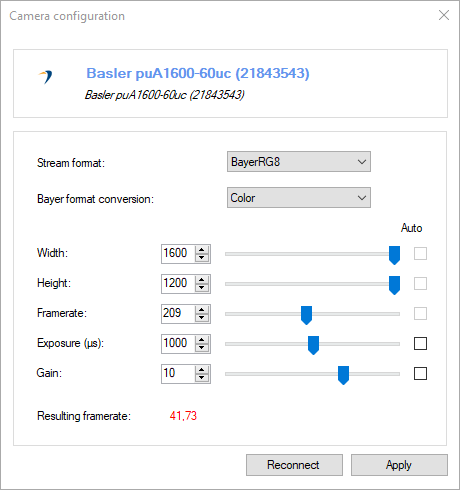
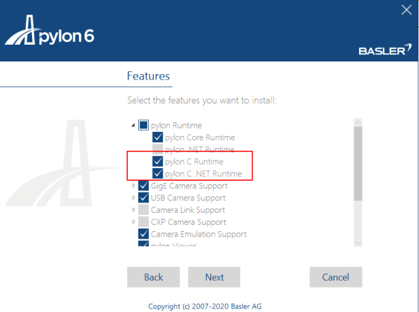
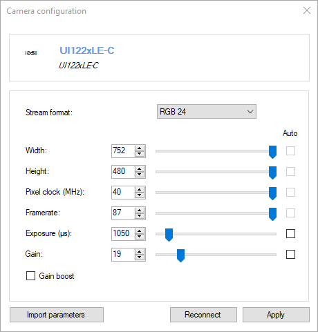

Machine vision and industrial cameras¶
General¶
The following camera brands are supported:
Basler: https://www.baslerweb.com
Daheng imaging: https://www.dahengimaging.com/
Baumer: https://www.baumer.com
Installation¶
The machine vision cameras are supported via plugins that are distributed separately from MotionON.
Each plugin must be installed under the application data folder, inside the Plugins\Camera sub-folder.
The runtime for the specific camera brand, provided by the manufacturer, must also be installed separately. Consult the section for each brand below to check if any extra customization is needed during the installation of the vendor’s runtime to make it work with MotionON.
Configuration¶
This section describes the common options for the configuration of machine vision cameras. Settings or installation information specific to each camera vendor are described after the section Resulting Framerate.
Stream format¶
The available stream formats depend on the brand and model of the camera.
Stream formats named Raw or containing Bayer in the name transmit the raw sensor data and can be used to record raw videos.
Bayer format conversion¶
When the selected stream format is a raw Bayer format, this option defines which reconstruction method, if any, is applied to the raw sensor data. The following options are available:
Raw: No reconstruction is performed. MotionON receives the images as-is.
Mono: Monochromatic images are rebuilt by the camera vendor runtime before passing the images to MotionON.
Color: Color images are rebuilt by the camera vendor runtime before passing the images to MotionON.
Note
When using a raw stream format and the video is recorded without compression, the raw sensor data is saved to the video file. It is then possible to rebuild the color at playback time by choosing the appropriate option under the menu . This approach can be interesting to limit the bandwidth required to transfer the camera stream and save it to storage.
Width¶
The width of the images. This usually has no effect on the maximum framerate possible as the cameras always read entire sensor rows.
Height¶
The height of the images. This usually impacts the maximum framerate possible as only the required rows are read from the sensor.
Framerate¶
The target framerate. Whether this framerate is actually reached or not depends on the image format, size, exposure and the camera hardware. If the framerate cannot be sustained, the Resulting framerate value will be displayed in red.
If the Auto checkbox is checked, the camera will ignore the value and always send the maximum framerate possible based on the rest of the configuration and the camera hardware. If the Auto checkbox is not checked, the camera will use at most the configured value, if it is possible for the hardware to do so. The manual configuration can be interesting if you want to use a specific framerate that is less than the maximum possible.
Note
After changing the image size or stream format you must click on Reconnect for the maximum framerate information to be updated.
Exposure (µs)¶
This is the amount of time the sensor is exposed, in microseconds. Changing the exposure duration lets you find a tradeoff between motion blur and light requirements. Lowering this value reduces motion blur but increase the amount of light required to capture the scene.
This value is a limiting factor for the framerate. For example a value of 20 milliseconds implies that there cannot be more than 50 images per second captured.
Gain¶
This is the amount of amplification of the signal captured on the sensor. Increasing this value increases the apparent brightness but can introduce noise in the image.
This value has no impact on the framerate.
Resulting framerate¶
This value is the actual framerate at which the camera will send images, based on the other values and the camera hardware capabilities.
Basler¶
Pylon installation¶
When installing Basler’s Pylon runtime software, it is necessary to use the Custom option in the installer, expand the pylon Runtime node, and select pylon C .NET Runtime option.
If you have already installed the software you can re-run the installer and choose Modify the current installation to access this option.
Other options for Basler¶
Options that are not supported in MotionON can be modified in Basler’s Pylon viewer.
IDS¶
Other options for IDS¶
In order to use options that are not supported in MotionON, use IDS’ uEye Cockpit. Modify the camera configuration in uEye Cockpit and do . Then in MotionON, use the Import parameters button on the camera configuration dialog and point to the file you just saved.
In order to unlink the configuration file with MotionON, right click on the camera thumbnail in the main explorer view and use the menu .